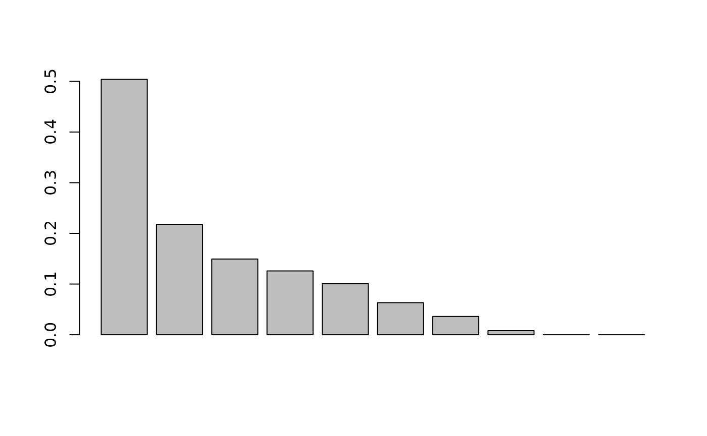
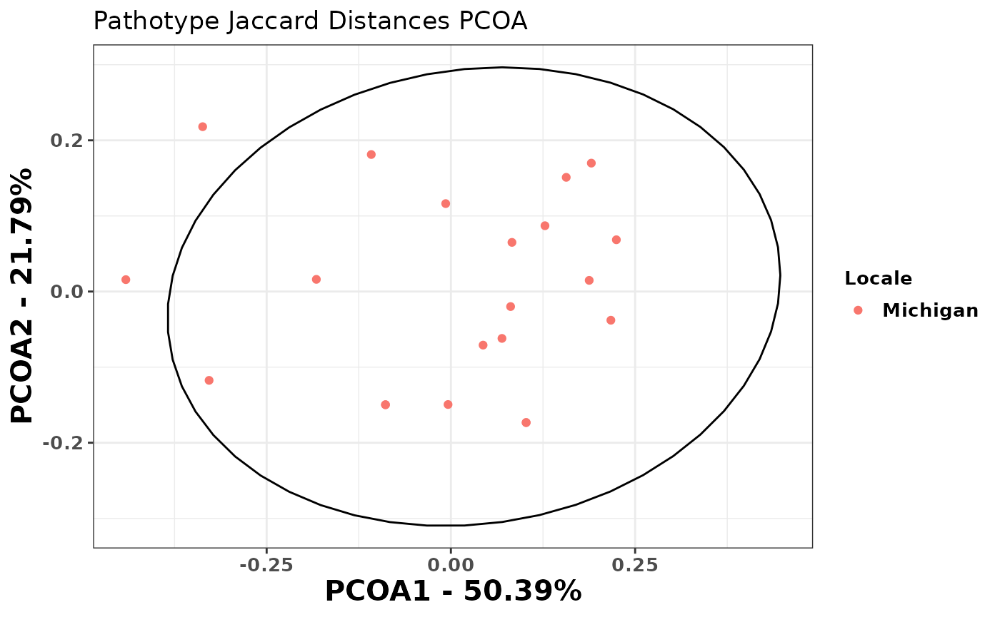
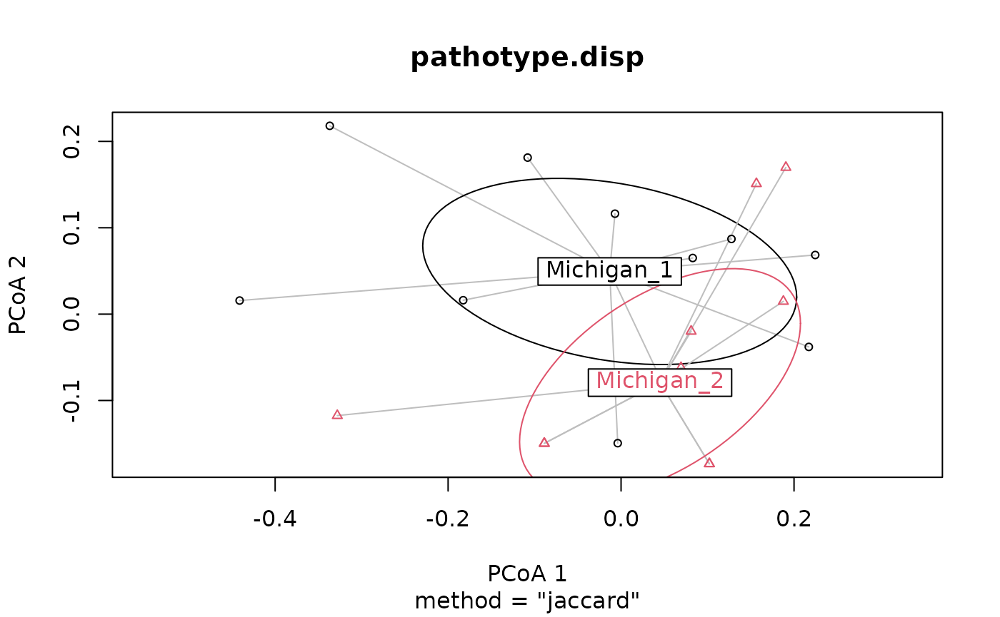

Beta-diversity Analysis with hagis
Austin McCoy
2025-07-28
Source:vignettes/betadiversity.Rmd
betadiversity.RmdLoad Packages
These packages are necessary for this analysis to be conducted.
Import the data to be used in analysis. These example data are included in {hagis} and so when loading {hagis} they become available in your R session.
head(P_sojae_survey) # survey sample data## Isolate Line Rps Total HR (1) Lesion (2)
## <int> <char> <char> <int> <int> <int>
## 1: 1 Williams susceptible 10 0 0
## 2: 1 Harlon Rps 1a 10 4 0
## 3: 1 Harosoy 13xx Rps 1b 8 0 0
## 4: 1 L75-3735 Rps 1c 10 10 0
## 5: 1 PI 103091 Rps 1d 9 2 0
## 6: 1 Williams 82 Rps 1k 10 0 0
## Lesion to cotyledon (3) Dead (4) total.susc total.resis perc.susc perc.resis
## <int> <int> <int> <int> <int> <int>
## 1: 0 10 10 0 100 0
## 2: 0 6 6 4 60 40
## 3: 0 8 8 0 100 0
## 4: 0 0 0 10 0 100
## 5: 1 6 7 2 78 22
## 6: 0 10 10 0 100 0
head(sample_meta) # metatada about the sample collection locations## Sample Locale
## 1 1 Michigan
## 2 10 Michigan
## 3 11 Michigan
## 4 12 Michigan
## 5 13 Michigan
## 6 14 MichiganThis removes the “MPS17_” from the isolates, so that they will be read as numeric instead of character. The next step removes the “Rps” from the gene names, so that they will be read as numeric instead of character.
P_sojae_survey$Isolate <-
gsub(pattern = "MPS17_",
replacement = "",
x = P_sojae_survey$Isolate)
P_sojae_survey$Rps <-
gsub(pattern = "Rps ",
replacement = "",
x = P_sojae_survey$Rps)Set up the {hagis} arguments for analysis. Please see
vignette("hagis") for more details on how to specify
arguments for the functions in this package.
hagis_args <- list(
x = P_sojae_survey,
cutoff = 60,
control = "susceptible",
sample = "Isolate",
gene = "Rps",
perc_susc = "perc.susc"
)Convert the Dataset to a Binary Data Matrix
Using create_binary_matrix() transforms the data so that
it is in the correct format (binary data matrix) for PCOA analysis.
P_sojae_survey.matrix <- do.call(create_binary_matrix, hagis_args)
P_sojae_survey.matrix## 1a 1b 1c 1d 1k 2 3a 3b 3c 4 5 6 7
## 1 1 1 0 1 1 1 1 1 0 0 1 1 1
## 10 1 0 1 0 0 0 0 1 0 0 1 0 1
## 11 1 0 1 0 0 0 0 1 0 0 1 1 1
## 12 1 1 1 1 1 1 0 0 0 0 0 1 1
## 13 1 1 1 1 1 0 0 1 0 0 0 0 1
## 14 1 1 1 0 1 0 0 1 0 0 1 1 1
## 15 1 1 1 1 1 1 0 1 0 1 1 1 1
## 16 1 1 1 0 1 0 0 1 0 0 1 0 1
## 17 1 1 1 1 1 1 0 1 0 1 1 0 1
## 18 1 1 1 1 1 0 1 1 0 0 1 1 1
## 19 1 1 1 1 1 1 1 1 1 0 0 1 1
## 2 1 1 1 0 1 1 0 1 1 1 0 1 1
## 20 1 1 1 1 1 1 1 1 1 0 1 0 1
## 21 1 1 1 1 1 1 1 1 1 1 1 1 1
## 3 1 1 1 1 1 1 0 1 0 1 0 1 1
## 4 1 0 1 1 1 1 0 1 0 0 1 0 1
## 5 1 0 1 1 1 1 0 1 0 0 0 1 1
## 6 1 0 1 1 1 1 0 1 0 0 1 0 1
## 7 1 1 1 1 1 1 0 1 0 0 0 0 1
## 8 1 1 1 1 1 1 0 1 0 0 0 0 1
## 9 1 0 1 1 0 0 0 1 0 0 1 0 1The P_sojae_survey.matrix object contains the RPS genes
numbered as rows and the columns are numbered isolates. A “1” indicates
the isolate caused disease on the RPS gene, and a “0” means it did
not.
Perform Principle Coordinates Analysis (PCOA)
The following code will transpose the
P_sojae_survey.matrix and then calculate the Jaccard
distances for each isolate. Jaccard distance calculations need to be
used as pathotype data is presence/absence for virulence. Lastly, PCOA
is performed to identify the variance explained by each principal
coordinate. This will be used later to visualize and identify distance
pathotype groupings by geographic location. In this example, Jaccard
distances are used as this is presence/absence data.
P_sojae_survey.matrix.jaccard <-
vegdist(P_sojae_survey.matrix, "jaccard", na.rm = TRUE)After performing the principal coordinates analysis, we see that the scree plot says that about 70% of the variation in Jaccard distances are explained within the first two dimensions (i.e., axes). This is good. Usually a good rule of thumb is that if the second dimension is roughly half variation explained in the first dimension you don’t need to look further at the third or n+1 dimensions.
princoor.pathotype <- pcoa(P_sojae_survey.matrix.jaccard)
barplot(princoor.pathotype$values$Relative_eig[1:10])
Now we can calculate the percentage of variation that each principal
coordinate accounts for. Another way to calculate the percent variation
is to look at the Relative_eig column.
# Dimension (i.e., Axis 1 (PCOA1))
Axis1.percent <-
princoor.pathotype$values$Relative_eig[[1]] * 100
# Dimension (i.e., Axis 2 (PCOA2))
Axis2.percent <-
princoor.pathotype$values$Relative_eig[[2]] * 100
Axis1.percent## [1] 50.39109
Axis2.percent## [1] 21.79118Now we can make a data frame with the two principal coordinates that
account for the most variation in the data. We will then add metadata to
the data frame pca.data.
princoor.pathotype.data <-
data.frame(
Sample = as.integer(rownames(princoor.pathotype$vectors)),
X = princoor.pathotype$vectors[, 1],
Y = princoor.pathotype$vectors[, 2]
)Add Metadata to your PCOA Data
You will need to add information on the sample collection location or
other data to help identify different pathotype groupings based on
geographic location or other factors. We will use
left_join() from {dplyr} to combine the
princoor.pathotype.data with the metadata that we’ve
already loaded, sample_meta that contains a geographic
location (state name).
princoor.pathotype.data <-
left_join(princoor.pathotype.data, sample_meta, by = "Sample")
princoor.pathotype.data## Sample X Y Locale
## 1 1 0.127655783 0.08704548 Michigan
## 2 10 -0.441075005 0.01573886 Michigan
## 3 11 -0.336826428 0.21804192 Michigan
## 4 12 0.217071376 -0.03795693 Michigan
## 5 13 -0.003862869 -0.14942952 Michigan
## 6 14 -0.108034781 0.18124849 Michigan
## 7 15 0.082862290 0.06501932 Michigan
## 8 16 -0.182559838 0.01610323 Michigan
## 9 17 0.043684771 -0.07086878 Michigan
## 10 18 -0.007048533 0.11629976 Michigan
## 11 19 0.224528803 0.06847162 Michigan
## 12 2 0.190565779 0.16984304 Michigan
## 13 20 0.081014587 -0.01986841 Michigan
## 14 21 0.156490576 0.15103874 Michigan
## 15 3 0.187665103 0.01477482 Michigan
## 16 4 -0.088772478 -0.14970662 Michigan
## 17 5 0.069295886 -0.06198926 Michigan
## 18 6 -0.088772478 -0.14970662 Michigan
## 19 7 0.102108599 -0.17330058 Michigan
## 20 8 0.102108599 -0.17330058 Michigan
## 21 9 -0.328099742 -0.11749798 MichiganNow we will plot the PCA data using {ggplot2} and color the points
based on location, Locale, and identify the 95% confidence
interval of those groups using the stat_ellipse()
function.
ggplot(data = princoor.pathotype.data, aes(x = X, y = Y)) +
geom_point(aes(colour = Locale)) +
xlab(paste("PCOA1 - ", round(Axis1.percent, 2), "%", sep = "")) +
ylab(paste("PCOA2 - ", round(Axis2.percent, 2), "%", sep = "")) +
theme_bw() +
theme(
axis.title.x = element_text(face = "bold", size = 15),
axis.title.y = element_text(face = "bold", size = 15),
axis.text = element_text(face = "bold", size = 10),
legend.title = element_text(face = "bold", size = 10),
legend.text = element_text(face = "bold", size = 10),
legend.key.size = unit(1, 'lines')
) +
stat_ellipse(data = princoor.pathotype.data, aes(x = X, y = Y),
level = 0.95) +
ggtitle("Pathotype Jaccard Distances PCOA")
Statistical Tests for Beta Diversity
When using two or more pathotype datasets for comparisons, you can use beta-diversity tests to identify if there are significant differences between their sampled pathotype compositions. These code are presented as an example for further downstream analysis that can be used when comparing two or more populations’ pathotype composition.
In these examples we will artificially split the dataset into two, so that these analyses can be shown. When performing your own analyses you will likely have two geographic locations to compare already. Make sure you can differentiate these populations with the metadata file used previously (i.e., column in the dataset that specifies where the isolate came from; USA, Brazil, China, Australia, etc.).
Permutation Based Analysis of Variance (PERMANOVA) and Beta-dispersion Analyses
Beta-Dispersion
Beta-dispersion tests if the dispersion, variance, of two or more groups are significantly different or not. First, an item named “groups” must be made that contains lists of the location and number of isolates from that location used in the analysis. We will then check to make sure the lists in “groups” adds up to the number of isolated used in analysis.
First, make a list of the locations for each pathotype. Note that when you are using two or more locations you will need to make a list for each location with a length of isolates used.
groups <- factor(c(rep("Michigan_1", 11), rep("Michigan_2", 10)))
# this number shows how many isolates are in all "groups" lists combined
length(groups)## [1] 21
# this shows the number of isolates within your data set, these numbers should
# match for downstream analyses to work!!
length(unique(P_sojae_survey$Isolate))## [1] 21Next, beta-dispersion will be calculated using the Jaccard distance matrix made previously. An ANOVA is then performed to identify significance within the dataset. Post-hoc tests can be used to identify significant interactions between specific locations within the dataset. This can then be plotted to visualize how the beta-dispersion is different between groups.
# calculates the beta-dispersion for each group, when comparing 2 or more
pathotype.disp <-
betadisper(P_sojae_survey.matrix.jaccard, groups)
# tests if centroid distances are significantly different from each other
pathotype.disp.anova <- anova(pathotype.disp)
pathotype.disp.anova## Analysis of Variance Table
##
## Response: Distances
## Df Sum Sq Mean Sq F value Pr(>F)
## Groups 1 0.008375 0.0083752 0.9672 0.3377
## Residuals 19 0.164523 0.0086591
# test significance between each group
pathotype.disp.TukeyHSD <- TukeyHSD(pathotype.disp)
pathotype.disp.TukeyHSD## Tukey multiple comparisons of means
## 95% family-wise confidence level
##
## Fit: aov(formula = distances ~ group, data = df)
##
## $group
## diff lwr upr p adj
## Michigan_2-Michigan_1 -0.03998626 -0.1250853 0.04511275 0.3377355
# plot showing the dispersion for each group
plot(pathotype.disp, hull = FALSE, ellipse = TRUE)
The ANOVA identified no significant differences between groups
dispersion (p = 0.3377355). This means that the groups dispersion, or
variance, is not significantly different from each other and the groups
dispersion is likely homogeneous between groups. At this point, a Tukey
HSD test is not warranted, but we use it as an example here. Again, a
p-value of 0.3377355 is reported from the Tukey HSD tests and we reject
the hypothesis that these groups may have different dispersion. We can
plot the dispersion for each group using the plot()
function. As expected, since we have identified no significant
differences, the two groups dispersion overlap a great deal and are not
distinct from each other. Again this shows that pathotype dispersion
between the groups is homogeneous and not different in this
instance.
If we were working with a data set that had groups with significantly different dispersion we would expect to see a significant ANOVA p-value (p < 0.05) as well as significance when using the Tukey HSD test. Lastly, the plotted dispersion will form distinct, separate, groups which can be observed.
Differences in beta-dispersion may indicate separate pathotype groups which should be further investigated with Permutation Based Analysis of Variance (PERMANOVA) and Analysis of Similarity (ANOSIM) analysis. Groups which have similar dispersion may still be significantly different in regards to their centroids, which will be tested using a PERMANOVA.
Permutation Based Analysis of Variance (PERMANOVA)
PERMANOVA tests if the centroids, similar to means, of each group are significantly different from each other. Likewise, an statistic is calculated, showing the percentage of the variance explained by the groups.
pathotype.adonis <- adonis2(P_sojae_survey.matrix.jaccard ~ groups)
pathotype.adonis## Permutation test for adonis under reduced model
## Permutation: free
## Number of permutations: 999
##
## adonis2(formula = P_sojae_survey.matrix.jaccard ~ groups)
## Df SumOfSqs R2 F Pr(>F)
## Model 1 0.11358 0.07869 1.6229 0.184
## Residual 19 1.32976 0.92131
## Total 20 1.44335 1.00000The PERMANOVA identified no significant differences between the groups centroids, or means (p = 0.184). In addition to identifying significance between group centroids, the PERMANOVA also calculates how much of the variance can be explained by the specified groups (see the column in the PERMANOVA output). In this case, the is 0.0786944, so 7.9% of the variance is explained by the groups used in analysis. Based on the PERMANOVA results we can conclude that these two groups are not different from each other and likely have similar pathotypes to each other.
Analysis of Similarity (ANOSIM)
ANOSIM statistic (R) ranges from between -1 and 1. Positive numbers suggest that there is more similarity within groups than there is between groups. Values close to zero indicate no difference between groups (i.e., similarities are the same between groups).
pathotype.anosim <- anosim(P_sojae_survey.matrix.jaccard, groups)
pathotype.anosim##
## Call:
## anosim(x = P_sojae_survey.matrix.jaccard, grouping = groups)
## Dissimilarity: jaccard
##
## ANOSIM statistic R: 0.06882
## Significance: 0.151
##
## Permutation: free
## Number of permutations: 999ANOSIM statistic (R) was 0.0688182, so there are more similarities between groups than there are within groups. This is evidence that the groups are not different from one another. Likewise the significance is >0.05 so there is no significant difference between groups’ similarities.